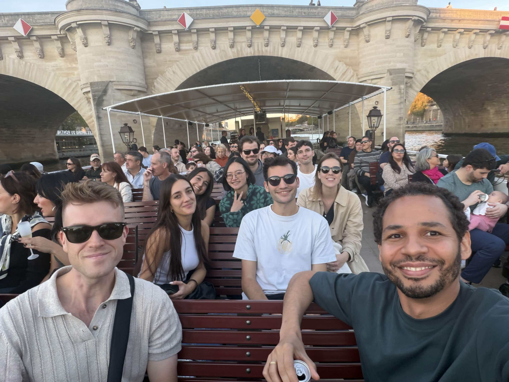
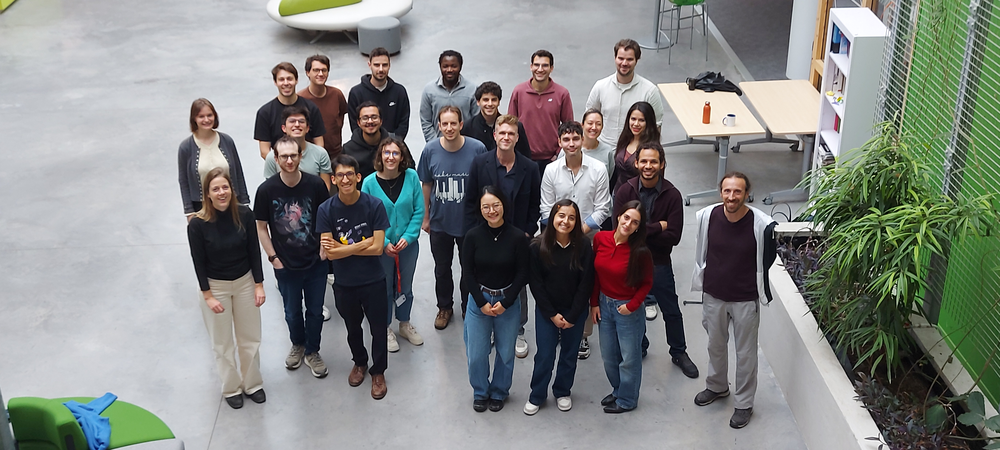

Lab Retreat & Visit SODA in Paris
The TRL Lab went to Paris which included a boat trip and a visit to the SODA team at Inria.
Day 1
On Day 1, after arriving in Paris, we sat down with the lab in a room to have some discussions around our favorite “tables” (some that came up:vectorized MNIST, single-cell tables, etc.) and revolutions, while spending time thinking about how we’d like to redo our lab site (TBC!). Informed by some ideas from our brainstorm session, Cornelius Wolff and Daniel Gomm set Claude to work to redo our lab page, that resulted in an entertaining website with tabular theme, go check it out here! Afterwards, we went on a lovely boat tour over the Seine during golden hour followed by dinner!

Day 2
On Day 2, we visited the SODA team at Inria! After introductions several members of the TRL Lab gave talks. Effy talked about our recent work on the silent failure modes in agentic data science, Daniel introduced our thinking and findings about open tabular insight extraction, Cornelius introduced the new SQaLe dataset and the agentic text-to-SQL models trained on it, and Nour presented the tabular selective attention mechanism for long-context tabular foundation models (TBC). The SODA team presented interesting overviews of their research lines around Tabular Foundation Models, AI for Education, and AI for Health. We ended the day with discussions on agentic data science, specialized versus general-purpose models for tabular AI, and tabular foundation models. To be continued…!

Enjoy Reading This Article?
Here are some more articles you might like to read next: